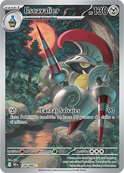
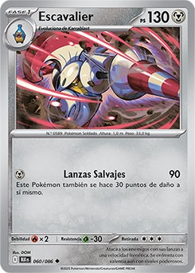

Número de Pokédex: #589


Número de Pokédex: #589


TIPO: Bicho/Acero
Escavalier es un Pokémon de tipo Bicho/Acero introducido en la quinta generación, conocido como el Pokémon Caballía o Soldado. Su cuerpo está completamente protegido por una armadura de acero robada de un Shelmet durante su evolución, la cual le sirve para defenderse y atacar con sus dos mortíferas lanzas a una velocidad frenética.